Chapter 4: Custom Asynchronous Sequences With AsyncStream¶
In previous chapters, you’ve learned a few different ways to integrate asynchronous code in your apps. By now, you’re hopefully comfortable calling and writing async functions and iterating over asynchronous sequences.
In this chapter, you’ll dive deeper into how to create your very own custom async sequences using AsyncStream. Using this method grants you complete control over the asynchronous sequence and makes it trivial to wrap your own existing asynchronous APIs as async sequences.
In this chapter, you’ll work through the Blabber app to explore these topics.
Getting started with the Blabber app¶
Blabber is a messaging app that lets you chat with friends. It has some neat features like location sharing, a countdown timer and a friendly — but somewhat unpredictable — chatbot.
Like all projects in this book, Blabber’s SwiftUI views, navigation and data model are already wired up and ready for you. Blabber has a similar foundation to the projects you’ve already worked on, like LittleJohn and SuperStorage. It’s a connected app powered by a server API. Some of that code is already included in the starter because it works the same as in earlier projects.
Open the starter version of Blabber in this chapter’s materials, under projects/starter. When you complete the app, it will feature a working login screen, where you can choose your user name, and a chat screen to socialize with friends:
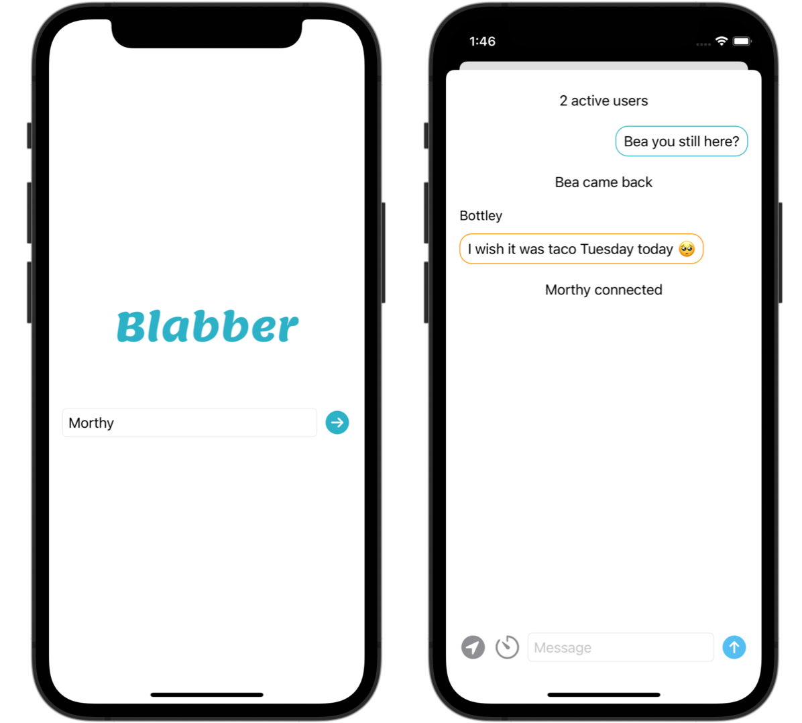
At the moment, you can enter a user name, but nothing else works. Your goal is to make asynchronous calls to the server, then provide live updates in the app by reading from a long-living server request.
Before starting to work on the app, start the book server. If you haven’t already done that, navigate to the server folder 00-book-server in the book materials-repository and enter swift run. The detailed steps are covered in Chapter 1, “Why Modern Swift Concurrency?”.
Adding functionality to Blabber¶
In the first section of this chapter, you’ll work on finishing some missing app functionality. That will give you a solid start when you work on your own custom sequences in the following sections.
Go to BlabberModel.swift, where you’ll add most of the app’s logic throughout this and the following chapters.
The chat() method in BlabberModel includes the code to open a long-living request that will return real-time updates.
Note: Just as in previous chapters, “long-living” means the URL request doesn’t time out. This lets you keep it open so you can constantly receive server updates in real time.
Once it establishes a connection, that method calls readMessages(stream:). This is the method you’ll work on in this section.
Parsing the server responses¶
The custom chat protocol that the book server implements sends a status as the first line, then continues with chat messages on the following lines. Each line is a JSON object, and new lines appear whenever users add chat messages. This is all part of the same long-living request/response. Here’s an example:
{"activeUsers": 4}
...
{"id": "...", "message": "Mr Anderson connected", "date": "..."}
...
{"id": "...", "user": "Mr Anderson", "message": "Knock knock...", "date": "..."}
/// and so on ...
This is a bit different from what you’ve done in previous chapters — it requires more work to handle the response.
Scroll down to readMessages(stream:) and add this code to read the first line of the server response:
var iterator = stream.lines.makeAsyncIterator()
guard let first = try await iterator.next() else {
throw "No response from server"
}
In the code above, you first create an iterator over the lines sequence of the response. Remember, the server sends each piece of data on a separate text line. You then wait for the first line of the response using next().
Note: Using an iterator and next() instead of a for await loop lets you be explicit about the number of items you expect to deal with. In this case, you initially expect one, and only one, server status.
Next, decode that server status by adding:
guard let data = first.data(using: .utf8),
let status = try? JSONDecoder()
.decode(ServerStatus.self, from: data) else {
throw "Invalid response from server"
}
Here, you convert the text line to Data and then try to decode it to a ServerStatus. The starter project includes a ServerStatus data model containing a single property called activeUsers. This is how the server tells you how many users are in the chat at the moment.
Storing and using the chat information¶
To store this information, add the following code immediately after the decoding:
messages.append(
Message(
message: "\(status.activeUsers) active users"
)
)
messages is a published property on BlabberModel that contains the messages displayed onscreen. Most Message values are user messages posted in chat. They contain a specific user and date, but in this case, you use a convenience initializer that only accepts the message, as the initial status is considered a system message.
To use the server status you fetched, you create a new system message that says X active users and add it to the messages array.
After the initial status, the server sends an ever-growing list of chat messages, each on its own line.
This is similar to what you’ve done in previous chapters. You can abandon the iterator that you just used because the number of items you are expecting is now open-ended.
Next, move on to consuming the rest of the stream with a for await loop:
for try await line in stream.lines {
if let data = line.data(using: .utf8),
let update = try? JSONDecoder().decode(Message.self, from: data) {
messages.append(update)
}
}
You iterate over each response line and try to decode it as a Message. If the decoding succeeds, you add the new message to messages. Just like before, your UI will immediately reflect the change.
Now, the final piece of the app’s core is in place. Build and run. Give Blabber a try by entering a user name and tapping the enter button on the right-hand side of the login screen:
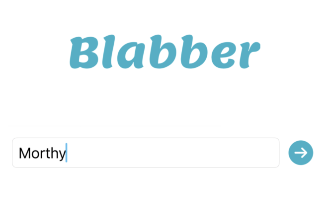
The app reads the first message from the server, then displays the server status at the top of the chat screen. Enter one or more messages in the text field at the bottom, then send them off to the server. You’ll see them pop right back onscreen, meaning the server received them and then sent them back to you:
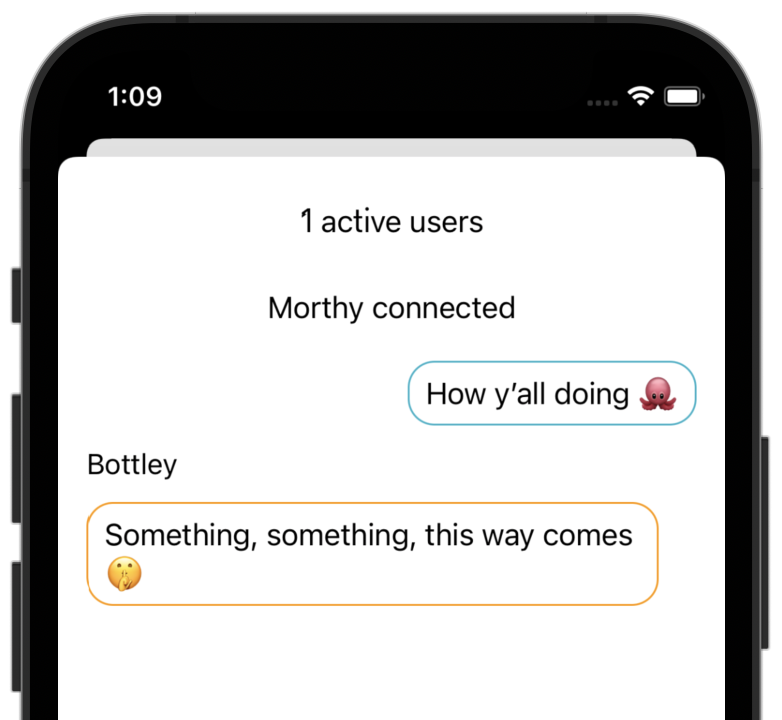
Don’t be alarmed if some unexpected messages appear too, as in the screenshot above. This is just the chat bot Bottley trying to jump into the discussion.
When you get bored of talking to Bottley, who isn’t the best conversationalist, you can launch more simulators and start a conversation between your alter egos, instead:
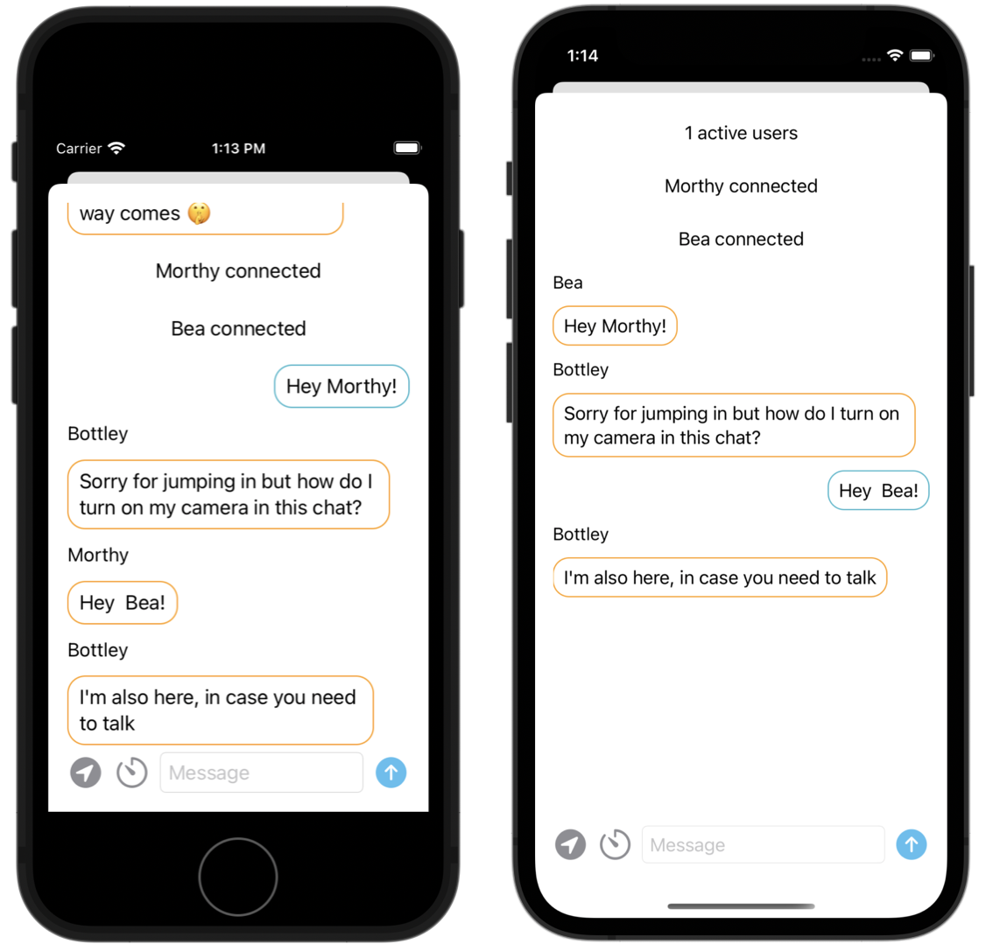
Well, look at that — you already have a somewhat functioning chat app at your fingertips. How cool!
Digging into AsyncSequence, AsyncIteratorProtocol and AsyncStream¶
In the previous section, you learned that an asynchronous sequence lets you access its elements via its iterator. In fact, defining the element type of the sequence and providing an iterator are the only requirements of the AsyncSequence protocol:
protocol AsyncSequence {
...
func makeAsyncIterator() -> Self.AsyncIterator
}
There are no further requirements regarding how you produce the elements, no constraints on the type lifetime — nothing. In fact, quite the opposite: Open AsyncSequence‘s documentation (https://developer.apple.com/documentation/swift/asyncsequence); you’ll see that the protocol comes with a long list of methods, similar to those offered by Sequence:
func contains(_:) -> Bool
func allSatisfy(_:) -> Bool
func first(where:) -> Self.Element?
func min() -> Self.Element?
func max() -> Self.Element?
...
The iterator also powers for await loops, which you’re probably already quite familiar with at this point.
You don’t need to limit yourself to the most obvious use cases. Here are just a few examples of different sequences that you might easily create on your own:
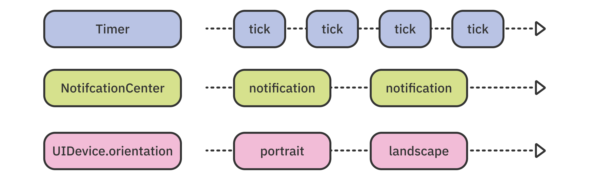
By adopting AsyncSequence, you can take advantage of the default implementations of the protocol, for free: prefix(while:), contains(), min(), max() and so on.
The sequence’s iterator must conform to AsyncIteratorProtocol, which is also very minimal. It has only one requirement — an async method that returns the next element in the sequence:
protocol AsyncIteratorProtocol {
...
func next() async throws -> Self.Element?
}
Simple async sequences¶
What would a simple implementation of an asynchronous sequence look like?
Below is an example of a typewriter — an asynchronous sequence that “types” a phrase adding a character every second. Don’t add this code to the project; just review it:
struct Typewriter: AsyncSequence {
typealias Element = String
let phrase: String
func makeAsyncIterator() -> TypewriterIterator {
return TypewriterIterator(phrase)
}
}
The type has a phrase to type out, which you pass to the iterator. The iterator looks like this:
struct TypewriterIterator: AsyncIteratorProtocol {
typealias Element = String
let phrase: String
var index: String.Index
init(_ phrase: String) {
self.phrase = phrase
self.index = phrase.startIndex
}
mutating func next() async throws -> String? {
guard index < phrase.endIndex else {
return nil
}
try await Task.sleep(nanoseconds: 1_000_000_000)
defer {
index = phrase.index(after: index)
}
return String(phrase[phrase.startIndex...index])
}
}
The iterator holds a copy of the string. Each time you call next(), it returns a substring of the initial string that is one character longer than the last one.
Finally, when it reaches the end of the phrase, either by a for await loop or some code that calls next() directly, next() returns nil to signify the end of the sequence.
Note: If you’re wondering why Task.sleep(nanoseconds:) is throwing — it throws a CancellationError if the current task is canceled while it’s sleeping. Throwing an error is the quickest way to cleanly and safely wrap up the current execution without waiting the given amount of time.
You can now use this type like any other AsyncSequence:
for try await item in Typewriter(phrase: "Hello, world!") {
print(item)
}
Which produces the following output, eventually:
H
He
Hel
Hell
Hello
Hello,
Hello,
Hello, w
Hello, wo
Hello, wor
Hello, worl
Hello, world
Hello, world!
As easy as creating a custom AsyncSequence is, it still requires you to add two extra types to your codebase.
To avoid clutter, you can make a single type conform to both AsyncSequence and AsyncIteratorProtocol, but there’s also another, much easier, way.
Simplifying async sequences with AsyncStream¶
To streamline creating asynchronous sequences, Apple has added a type called AsyncStream, which aims to make creating async sequences as simple and quick as possible.
It conforms to AsyncSequence and produces values from a single closure, where you define the custom logic for your sequence.
This is a big win for decreasing complexity in your code, because you don’t have to add additional types every time you need a new asynchronous sequence.
AsyncStream has a minimal interface, other than inheriting all the default methods from AsyncSequence:
- init(_:bufferingPolicy:_:): Creates a new stream that produces values of the given type, by the given closure. Your closure can control the sequence via a structure called a continuation. Produced but unconsumed values are held in a buffer. If you don’t use the option to set storage limits for that buffer, all the unconsumed values will be buffered.
- init(unfolding:onCancel:): Creates a new stream that produces values by returning them from the
unfoldingclosure. It optionally executes anonCancelclosure when it’s canceled.
To reproduce the typewriter example using AsyncStream, you’d write code like this:
var phrase = "Hello, world!"
var index = phrase.startIndex
let stream = AsyncStream<String> {
guard index < phrase.endIndex else { return nil }
do {
try await Task.sleep(nanoseconds: 1_000_000_000)
} catch {
return nil
}
defer { index = phrase.index(after: index) }
return String(phrase[phrase.startIndex...index])
}
for try await item in stream {
print(item)
}
This code uses the unfolding variant of AsyncStream, where the closure just returns the next value in the sequence.
Now that you see how AsyncStream works, you’ll use its continuation variant to implement the countdown feature in Blabber.
Creating an asynchronous timer with AsyncStream¶
The countdown feature in the Blabber app adds an element of drama to your chats by counting down before showing your latest message. You’ll use AsyncStream and Timer to achieve this.
Open BlabberModel.swift and scroll to countdown(to:). The timer button in the UI calls this method when the user taps it. Right now, it’s empty and ready for you to add some code.
Add this code at the bottom of the method:
let counter = AsyncStream<String> { continuation in
}
This creates an AsyncStream that produces String values. Inside the trailing closure, you’ll add your own logic to produce those values.
Note the continuation argument — this lets you control the sequence. continuation is of type AsyncStream.Continuation and offers methods to produce values, error out or complete the sequence. You’ll use all of those options shortly.
Your countdown sequence doesn’t do very much. It starts at three and counts down to one before finally terminating with the user’s message:
Building your timer logic¶
Now, it’s time to start building the timer’s logic. Insert this inside AsyncStream’s trailing closure:
var countdown = 3
Timer.scheduledTimer(
withTimeInterval: 1.0,
repeats: true
) { timer in
}
Here, you initialize your counter variable, countdown, with the initial value of 3 and create a Timer that fires each second.
Now, insert this code inside the Timer’s closure:
continuation.yield("\(countdown) ...")
countdown -= 1
On every timer tick, you call yield(_:) on the continuation to produce a value, then decrease the counter. You’ll add the code to stop the timer when you reach zero in a moment.
Build and run. Once you log in, enter something in the text field and tap the timer button:
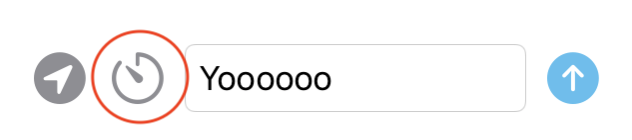
Nothing happens! Right now, your stream is producing values, but nobody’s listening. The values will buffer until something consumes them:
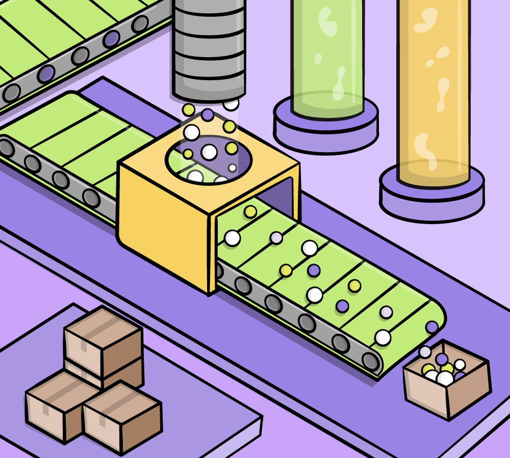
To iterate over the values, add this code at the bottom of the method, outside any of the previous closures:
for await countdownMessage in counter {
try await say(countdownMessage)
}
You call say(_:) for each of the values, which sends all the messages over to the server.
Build and run one more time. Go through the same routine: Log in, enter a message and tap the timer button. The stream starts producing values, and your for await loop gets one of them every second:
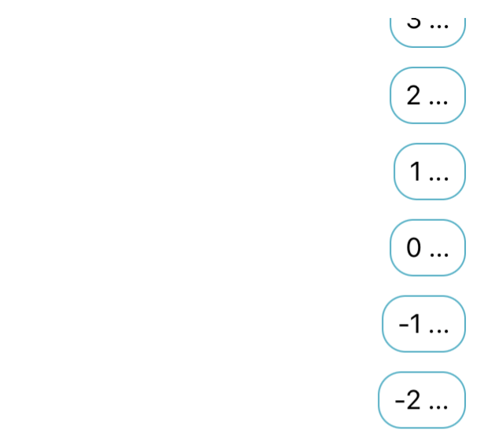
The asynchronous stream is practically ready! You still need to stop the counter when it reaches zero and send the user’s message.
Stopping the timer and sending the message¶
Move back to the Timer’s closure in scheduledTimer(...) and insert the following at the top, before the code yielding the values:
guard countdown > 0 else {
timer.invalidate()
continuation.yield("🎉 " + message)
continuation.finish()
return
}
This code:
- Stops the timer when the counter reaches zero.
- Yields a final value: the user’s initial message.
- Finally, calls
continuation.finish()to complete the sequence.
You often need to produce the last value and complete the sequence at the same time. Fortunately, there’s a shortcut for that. Replace the two method calls you just added on continuation with:
continuation.yield(with: .success("🎉 " + message))
This produces the last sequence value and finishes it in a single call.
To make sure you entered all the closure code correctly, here’s the completed AsyncStream code:
let counter = AsyncStream<String> { continuation in
var countdown = 3
Timer.scheduledTimer(
withTimeInterval: 1.0,
repeats: true
) { timer in
guard countdown > 0 else {
timer.invalidate()
continuation.yield(with: .success("🎉 " + message))
return
}
continuation.yield("\(countdown) ...")
countdown -= 1
}
}
Build and run. Play through the timer routine and you’ll see the completed message sequence:
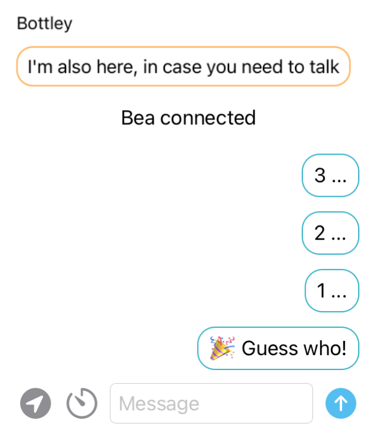
With your new timer messages feature, you’re on your way to building the chat client of the future! Or at least, knowing how to do so properly. :]
Next, you’ll learn how to wrap existing closure-based asynchronous APIs as async sequences.
Adding an asynchronous stream to NotificationCenter¶
Going back and forth between closure-based asynchronous APIs and the modern async/await-based APIs can be tedious. Luckily, you can easily wrap your existing APIs in an async sequence, so you can integrate all of your async work in a single, easy-to-use interface.
In this section of the chapter, you’ll try your hand at converting another system-provided API into an asynchronous sequence. Specifically, you’ll add a method to NotificatonCenter that lets you iterate over notifications in a for await loop:
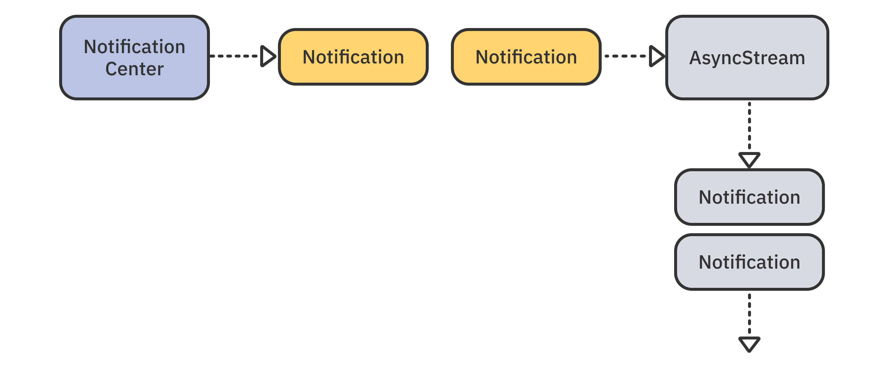
You’ll use your new, asynchronous API to send messages like user went away and user came back to the server when the user closes or re-opens the app.
Note: Since writing this chapter, Apple added a built-in API to observe notifications asynchronously called NotificationCenter.notifications(named:object:). Notifications remain, regardless, a great way for you to learn about wrapping synchronous APIs.
Open Utility/NotificationCenter+.swift. Inside, an empty extension declaration waits for you to add your new method to it.
Add the following:
func notifications(for name: Notification.Name) -> AsyncStream<Notification> {
AsyncStream<Notification> { continuation in
}
}
This method takes a notification name and returns an iterable, asynchronous stream.
Next, you’ll observe the required notifications and use yield(_:) to add them to the stream.
Insert this code inside AsyncStream’s closure:
NotificationCenter.default.addObserver(
forName: name,
object: nil,
queue: nil
) { notification in
continuation.yield(notification)
}
Here, you observe the default center for notifications with the given name. Whenever one comes in, you pipe it through via continuation.yield(_:). A notification stream is infinite, because there isn’t a fixed number of notifications.
Now, open BlabberModel.swift and add a new method to observe the app status and post updates to the server:
func observeAppStatus() async {
}
Inside the method, add a for await loop to iterate over willResignActiveNotification notifications:
for await _ in await NotificationCenter.default
.notifications(for: UIApplication.willResignActiveNotification) {
}
The system posts that notification when you switch to a different app or go back to your device’s home screen and the current app isn’t active anymore. Note how you use _ in the loop assignment because you aren’t interested in the notification’s details.
Notifying participants when a user leaves¶
To post a system message that the user has left the chat, add the following inside the loop you added at the end of the previous section:
try? await say("\(username) went away", isSystemMessage: true)
You call say(_:) as before, except you set the isSystemMessage to true. Because this is an automated message, you ignore any errors thrown from here.
Now, call observeAppStatus() just before you start the updates from the chat server. Scroll to readMessages(stream:) and insert this code before the for await loop:
let notifications = Task {
await observeAppStatus()
}
This creates a new asynchronous task and starts observing for notifications. You store that task in the local notifications variable because — as you might have guessed already — you want to cancel the observation once the loop completes.
Immediately after the last few lines, add this code:
defer {
notifications.cancel()
}
This will cancel your observation safely because the code in defer will run when either the for await loop throws or it completes successfully.
With that out of the way, it’s time to test the notification sequence! Build and run. Log in, then:
- Go to the home screen by clicking Device ▸ Home in the iOS Simulator menu or pressing Command-Shift-H.
- Click Device ▸ App Switcher in the menu, then click Blabber to go back to the app. You can also simply find the Blabber icon on the simulator’s home screen and tap it to go back to the app.
You’ll see the X went away message on all connected simulators:
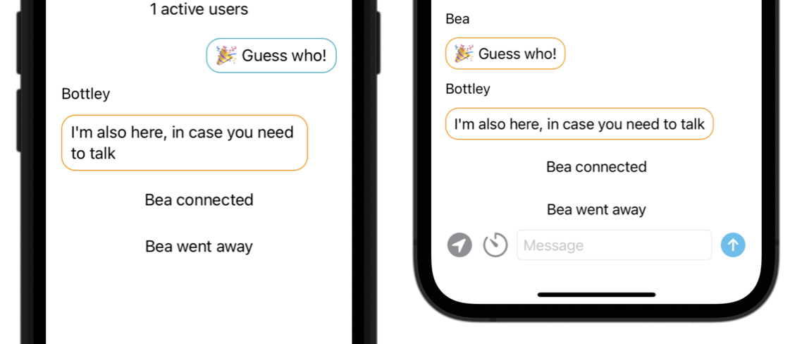
Now that you’ve notified your participants when a user leaves, it’s time to let them know when users come back as well.
Notifying participants when a user returns¶
To wrap up this section, you’ll also observe didBecomeActiveNotification to let the chat participants know when a user returns to the chat.
Scroll to observeAppStatus() and find the spot to add a second loop to observe for the additional notification.
Should you add the second for await loop before or after the first one? Since the code execution suspends for the duration of the loop, you can’t do either — because one of the two loops will then have to wait for the other to complete.
The two loops need to run in parallel, so you have to wrap each one in a Task. Edit observeAppStatus() to run the two tasks in parallel, like so:
func observeAppStatus() async {
Task {
for await _ in await NotificationCenter.default
.notifications(for: UIApplication.willResignActiveNotification) {
try? await say("\(username) went away", isSystemMessage: true)
}
}
Task {
for await _ in await NotificationCenter.default
.notifications(for: UIApplication.didBecomeActiveNotification) {
try? await say("\(username) came back", isSystemMessage: true)
}
}
}
Build and run one more time. Repeat the same test routine as the last time. Your code handles both notifications and there are two system messages, one for when you leave the app and another when you come back:
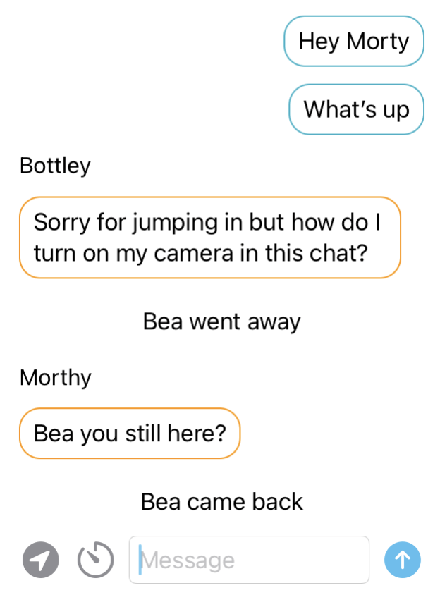
Extending AsyncSequence¶
Extending existing types is not an async/await feature per se, but with AsyncStream being so simple to use, your attention might stray away from the possibilities of extending the concrete AsyncStream type or even the more generic AsyncSequence protocol.
In this section, you’ll add a new method to AsyncSequence to make iterating over sequences more readable in some cases.
The Swift Sequence protocol features a handy convenience method called forEach(_:) that runs the given closure for each of the sequence’s elements. You’ll add the same method to AsyncSequence so you can use forEach(_:) instead of the for await loop.
forEach(_:) comes in handy when your code uses multiple sequence methods in succession to process the elements, like so:
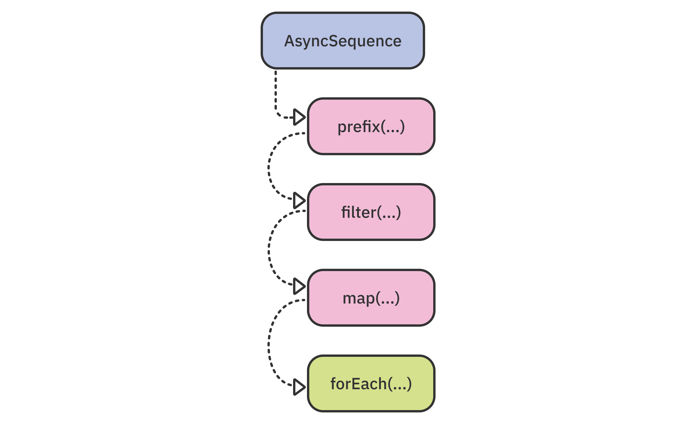
The implementation is so simple that you’ll add it directly in BlabberModel.swift.
At the bottom of the source file, after any of the existing declarations, add:
extension AsyncSequence {
func forEach(_ body: (Element) async throws -> Void) async throws {
}
}
In this new extension, you add a method to all types that conform to AsyncSequence, which takes an asynchronous, throwing closure and returns no result.
Next, add the implementation inside the new method:
for try await element in self {
try await body(element)
}
You asynchronously iterate over the sequence values and, as soon as any of them is available, pass it to body(_:).
Now, you have your own extension to all asynchronous sequences. If sometimes you feel like for await is too wordy, you can use forEach instead.
To try the new method, scroll to countdown(to:) and replace the for await loop with:
try await counter.forEach { [weak self] in
try await self?.say($0)
}
Arguably, the code isn’t much less wordy than the for await loop, because BlabberModel is a class — so you need to add all the cruft to avoid retain cycles by weakly capturing self.
However, in use cases where you’re working with a struct instead of a class, you’d be able to use it simply as: try await counter.forEach(say).
It’s time to congratulate yourself! With that last addition to the project code, you’ve finished working through this chapter. AsyncStream is one of the most powerful tools in your async/await toolbox.
If you had fun bridging existing APIs like Timer and NotificationCenter, you’ll love the next chapter, where you’ll learn how to bridge any code with the special continuation APIs. Before you move on, however, you can learn more about AsyncStream by completing this chapter’s optional challenge.
Challenges¶
Challenge: Using AsyncStream(unfolding:onCancel:)¶
In the AsyncStream overview section, you read about two ways to initialize an asynchronous stream. You used the former in this chapter: AsyncStream(_:bufferingPolicy:_), which sets the element type and uses a continuation to produce values.
The latter — AsyncStream(unfolding:onCancel:) — is a little simpler to use. Its closure parameter does not use a continuation. Instead, it returns either values or nil to terminate the sequence. Put simply, the unfolding closure is your iterator’s next() method.
For this challenge, go back and revisit the counter sequence in BlabberModel.countdown(to:).
Rewrite the code to use AsyncStream(unfolding:onCancel:) instead of AsyncStream(_:bufferingPolicy:_). For this exercise, omit the onCancel parameter.
Remember that returning nil from the unfolding closure terminates the sequence.
When implementing the unfolding closure, follow the code structure below:
- Use
Task.sleepto sleep a billion nanoseconds:1_000_000_000. IfTask.sleepthrows, it means the current task is canceled and you can safely finish the sequence. - Use
deferto decrease your counter when the closure execution completes. - Return “N …” when the counter is greater than zero.
- Return “🎉 message” if the counter has reached zero.
- Otherwise — complete the sequence.
The completed sequence workflow should like this:
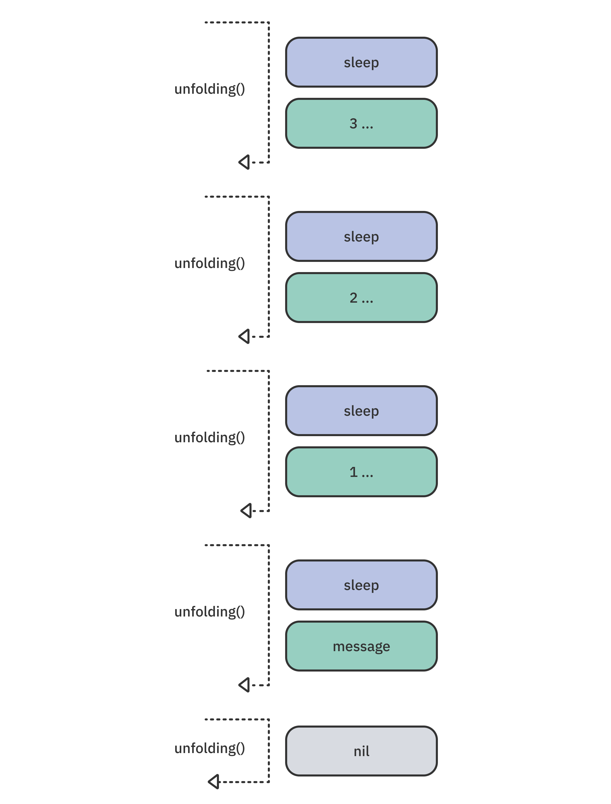
As always, if you get stuck or want to compare your code, look at the challenges project for this chapter.
Key points¶
- You can use iterators and loops to implement your own processing logic when consuming an
AsyncSequence. AsyncSequenceand its partner in crime,AsyncIteratorProtocol, let you easily create your own asynchronous sequences.AsyncStreamis the easiest way to create asynchronous sequences from a single Swift closure.- When working with a continuation: Use
yield(_:)to produce a value,yield(with:)to both produce a value and finish the sequence orfinish()to indicate the sequence completed.